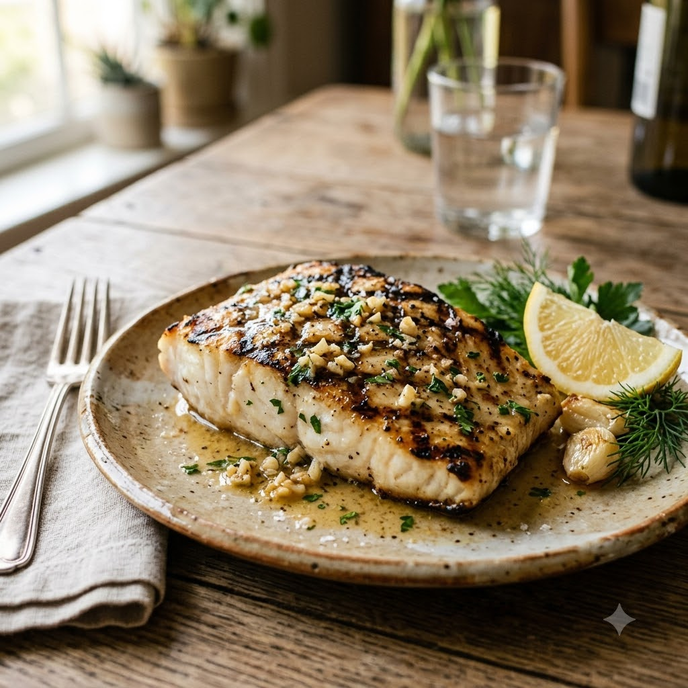

Garlic Butter Grilled Fish

Garlic Butter Grilled Fish
Airfryer – Grill 190°C 11 min — Serves 2
Ingredients
- 2 fish fillets (pomfret/basa)
- 1 tbsp melted butter
- 1 tsp garlic (lehsun), minced
- 1/2 lemon, juiced
- Salt & pepper to taste
- Chopped parsley or coriander (dhania)
Method
1Preheat: Preheat the Airfryer to 190°C for 4 minutes before adding the food to the basket.
2Mix melted butter, garlic, lemon juice, salt and pepper; brush over fillets.
3Place fillets in the basket without overlapping.
4Grill at 190°C for 11 minutes, no need to flip thin fillets.
5Garnish with herbs and serve with extra lemon.